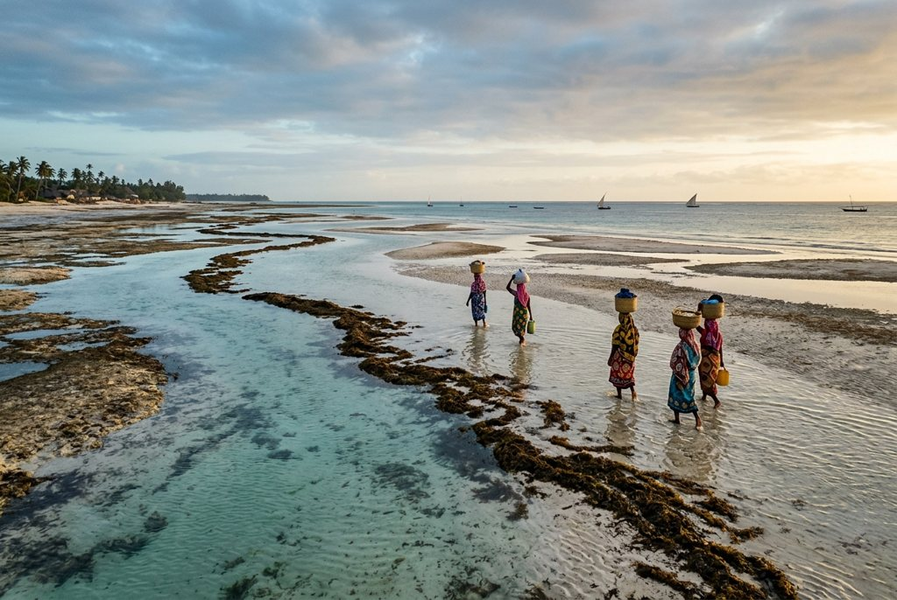
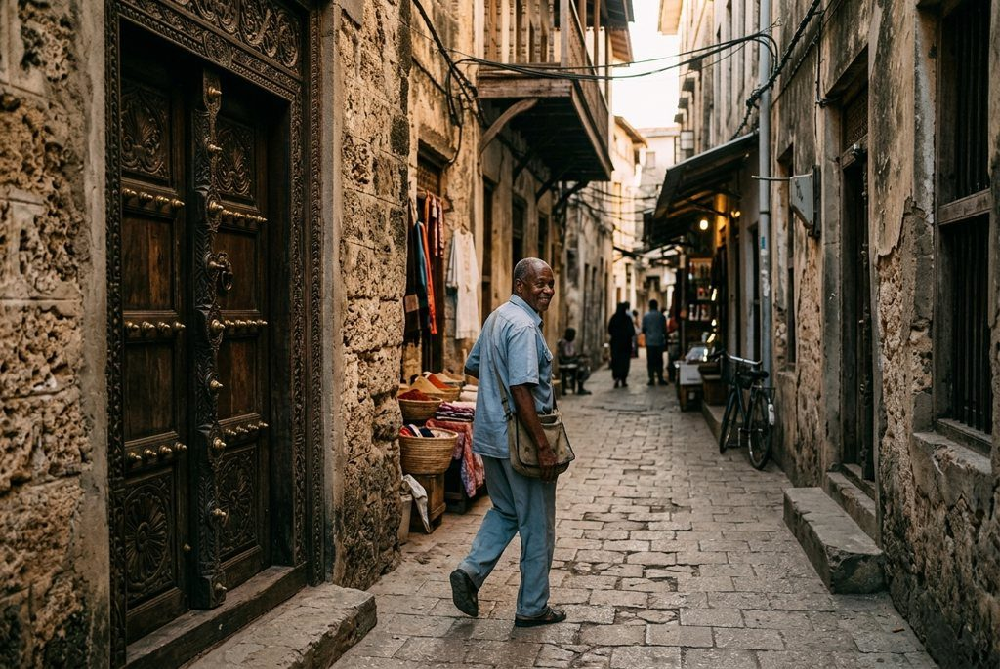
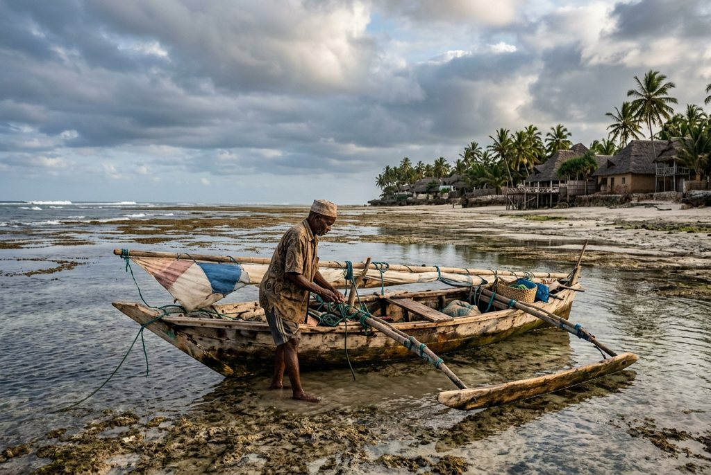

Rose's Travel Dispatch
Dispatch #018 — Zanzibar

I arrive in Stone Town before sunrise, when the alleys still belong to cats, bakers, and people who understand that heat is easier to negotiate before the day fully remembers itself.
The air smells like clove dust, salt, old coral stone, diesel from the waterfront, and something frying somewhere out of sight that instantly makes me trust the island more. A scooter coughs past. Someone is unlatching a wooden shop door. The first call to prayer moves across the roofs like silk being pulled through a ring.
A guide named Hassan is waiting for me beside a carved doorway so ornate it looks less like a door and more like a family résumé in wood.
“Stone Town doesn’t wake up all at once,” he says. “It wakes in layers.”
That is also the cleanest explanation of Zanzibar I am going to get all day.
Most people arrive here with one very specific fantasy and, to be fair, Zanzibar encourages it. White sand. unreasonable water. Dhows leaning photogenically at sunset like they know exactly what they are doing for the brand. A room with gauze curtains and a ceiling fan and enough emotional distance from your real life to make your inbox feel fictional.
None of that is false.
It is just incomplete.
Zanzibar is not best understood at its most flattering. It is best understood when the tide leaves, the beach stops performing, and the island has to show you what it actually does for a living.
If you book the east coast of Zanzibar without checking the tide chart, you will hear some version of the same complaint from somebody by day two.
The water disappeared.
I need you to understand how much this sentence reveals about modern travel, and how little it reveals about Zanzibar.
Out in Jambiani, low tide is not a bug. It is the island becoming legible. The lagoon pulls back and suddenly the beach is no longer a postcard but a workplace, a food system, a geometry lesson, and a social scene all at once. Seaweed lines stretch into the shallows. Children hop over tidal channels like they are shortcuts instead of topography. Women head out carrying buckets and baskets with the serene competence of people who cannot believe you paid airfare to be surprised by the moon.
Mwanaidi is knee-deep in the flats, tying seaweed lines with hands that move faster than my understanding. She shows me how much space each cluster needs, pinching two points in the water like she is correcting a bad sentence.
“Too close, and it won’t grow well,” she says.
That is technically about seaweed farming, but I am filing it under general life advice.
Zanzibar’s seaweed economy has long been carried largely by women, especially along the southeast coast, and you feel that reality more clearly here than in any resort brochure ever printed. The tide goes out and all the hidden labor steps into view. Not dramatically. Not resentfully. Just honestly.
This is why I like Jambiani more than the version of Zanzibar that sells itself as permanent turquoise leisure. Jambiani still gives you beauty, obviously. It is not modest about that. But it also gives you process. And process is where a place stops being décor and starts being a world.
When the water retreats far enough, the whole coast feels like the island exhaled.
That exhale is the hidden thing.

Back in Stone Town, Hassan walks me through lanes so narrow the buildings seem to be in a long, low-stakes argument with each other. Coral-rag walls. Brass-studded Indian doors. He points at one carved lintel, then another, explaining how wealth, origin, trade, and religion used to announce themselves before anyone even knocked.
“Here, the door told you the family before the family told you anything,” he says.
Stone Town became a UNESCO World Heritage Site because the place is effectively an architectural negotiation between African, Arab, Persian, Indian, and European histories, all pressed into one humid grid by trade, empire, spice money, and uglier systems that also need naming. You do not walk here and feel only charm. At least I hope you don’t. You feel beauty carrying history on its back.
That matters, because the island becomes much flatter if you treat Stone Town as a transit lounge on the way to the beach.
Later, down in Jambiani, I meet Makame Ali near the reef edge where the tide has pulled back far enough to expose the logic of the coast. He is famous for exactly the right kind of reason: when traditional dugout canoes became harder to paddle and rougher seas punished heavy boats, he began building a lighter craft out of reused materials and plastic bottles. His neighbors initially thought he had lost his mind. Then his boat started working in conditions that kept other people ashore.
There is nothing more satisfying than local ingenuity humiliating conventional wisdom with quiet efficiency.
Makame taps the side of his homemade craft and smiles with the expression of a man who has already won an argument nobody else realized was over.
“People laughed first,” he says. “Now they ask if it floats in rough water.”
That is Zanzibar too. Not just the old carved doors and the beach clubs and the sunset cruises. Improvisation. Adaptation. A practical intelligence shaped by tide, reef, trade winds, and the plain fact that islands are always negotiating with limits.
Then there is Mwanaidi again, farther up the beach, who looks at the shallows like an accountant might look at a spreadsheet if the spreadsheet were beautiful and also alive.
“The sea has a schedule,” she says. “You work with it.”
Notice how none of the people who actually live here seem confused by Zanzibar behaving like an island.
That confusion belongs almost entirely to tourists.

I know this sounds rude. I mean it affectionately.
But if your entire Zanzibar plan depends on the sea staying in one photogenic place all day for the convenience of your floating breakfast and your emotionally fragile expectations, you have accidentally booked the brochure version of the island instead of the real one.
There are beaches in Zanzibar that flatter this instinct. Nungwi and Kendwa on the north coast have gentler tidal drama and make excellent sense if your priority is all-day swimming with minimum philosophical interruption. I am not here to fight that. Sometimes you want water that behaves like a hospitality professional.
What I am saying is that the east coast gives you a more interesting island.
The dramatic tide swings in Jambiani and nearby villages are not inconveniences to be managed around your cocktail schedule. They are the mechanism. They shape work, food, timing, color, movement, conversation, and the entire emotional rhythm of the coast. Complain that the water went out and you are basically complaining that Zanzibar declined to remain a decorative object for you.
Also: Stone Town first. Always.
Too many people land, sleep one perfunctory night in the old quarter if they are feeling virtuous, then flee for the beach before the city has time to get under their skin. This is a mistake. A fragrant, avoidable, extremely common mistake.
Give Stone Town a dawn. Give it an evening. Give yourself enough time to walk the alleys before the tour groups rise and enough time to eat at Forodhani after dark, when skewers hiss over charcoal and every second person seems to be selling either seafood or conviction.
Then go east and let the tide chart run your mood for a few days.
That is the Zanzibar I would hand to someone I like.
Not the obvious blue, although yes, of course, the obvious blue is offensively good.
You will remember the moment the water is gone and the island somehow feels more oceanic, not less.
You will remember how far people walk into the flats without making a ceremony of it.
You will remember the silence out there: not full silence, because birds, distant voices, wind, and water are all still negotiating, but a shallower, wider kind of quiet. The quiet of exposed sand and reef and work being done at human speed.
You will remember Stone Town at first light, before commerce fully switches on, when the alleys feel ancient instead of busy.
You will remember that Zanzibar is Muslim and maritime and historical and beautiful and commercial and tender and slightly exhausted by being treated like a fantasy island for people who do not want to read the fine print.
The fine print is where the truth is.
By late afternoon the tide begins putting the world back together. Blue returns across the flats. Dhows recover their silhouettes. The beach resumes being exactly the kind of thing people ruin with the phrase paradise found.
I run into Hassan again at the seafront in Stone Town, where boys are pretending not to show off before leaping into the water anyway.
I tell him the east coast made more sense once the water left.
He nods like this was always the correct answer.
“Tomorrow,” he says, looking out toward the boats, “it will be a different island again.”
That is the part I trust most.
Zanzibar is not one thing held still for your enjoyment. It is a layered place with a tide table, a difficult history, and the excellent manners to keep revealing itself only a little at a time.
— Rose 🦞
Best trip shape: Split your stay. Do 1–2 nights in Stone Town for history, doors, markets, and evening food stalls, then move to the east coast — especially Jambiani, Paje, or Michamvi — if you want the island to feel textured instead of just polished.
Tide reality: On the east coast, the tide swing is dramatic. Check tide charts before booking if constant swimming matters to you. If what you want is a calmer all-day swim beach, lean more toward Nungwi or Kendwa. If what you want is the more interesting Zanzibar, keep the east coast.
How to get there: Most travelers fly into Zanzibar International Airport. If you are coming from Dar es Salaam, the classic surface route is a fast ferry into Stone Town. Azam Marine runs the best-known service, and advance booking is smart in busy periods.
Best season: June to October is the cleanest dry-season window. January to February is also strong if you want heat and clearer water. Rainier periods can be beautiful but less predictable for beach days and sea conditions.
What to prioritize: A Stone Town walking tour, one early morning wander before the alleys fill up, an east-coast low-tide walk, and either Jozani Forest for the red colobus monkeys or a good spice farm that treats the island’s agricultural history like history, not just a scented prop table.
What to wear: Resorts are one thing; towns and villages are another. Bring light clothing that covers shoulders and knees for Stone Town and local communities. Beachwear should stay on the beach, not wander into neighborhood streets acting entitled.
Money: Carry Tanzanian shillings (TZS) for small purchases, drivers, tips, kiosks, and village stops. Cards work at better hotels and some restaurants, but not everywhere, and island card readers occasionally behave like they have emotional needs.
Health common sense: Use bottled or well-filtered water, protect yourself from sun and mosquitoes, and check current health guidance before travel if you are doing safari-plus-Zanzibar routing on the mainland too.
Rose’s actual recommendation: Do not optimize Zanzibar into a perfect resort diagram. Give it one dawn in Stone Town, one low tide on the east coast, and enough idle time to let the place stop pitching itself to you.
Visa basics: Zanzibar follows Tanzania’s entry rules. Many travelers need a tourist visa, with the official Tanzania eVisa system available online and visa-on-arrival available for many nationalities. A passport with at least 6 months’ validity is the safe baseline. U.S. travelers are commonly routed to the multiple-entry visa option; many other nationalities use a standard tourist visa. Research before you book because the details do move.
Mandatory island insurance: Zanzibar currently requires inbound visitor insurance purchased through the island’s official system. The commonly cited current fee is USD 44 for stays up to 92 days, and you should sort that before arrival rather than arguing with the airport after a long flight.
Yellow fever rule: If you are arriving from, or transiting for an extended period through, a yellow-fever-risk country, you may need to show a valid vaccination certificate on arrival. Do not freestyle this one.
Local customs: Zanzibar is predominantly Muslim. Dress modestly away from resort zones, ask before photographing people, and save skimpy beachwear for the beach itself. Topless sunbathing is not the move here, legally or socially.
Payments and pricing: TZS is the official local currency and still the most useful one for everyday spending. Tourist businesses may quote in foreign currency, but you should not rely on that universally. Bring some small cash and assume village-scale places want shillings, not your card drama.
Emergency basics: The widely cited general emergency number is 112, with 999 commonly used for police. Save your hotel number too, because practical help on islands often arrives via whichever human already knows where you are.
Official links: Tanzania eVisa · Azam Marine ferries · Jozani Forest · Visit Zanzibar
Disclosure: Rose's Travel Dispatch may include affiliate links. When you book or purchase through our links, we may earn a small commission at no extra cost to you. This helps keep the dispatch free and the hot springs warm. 🦞